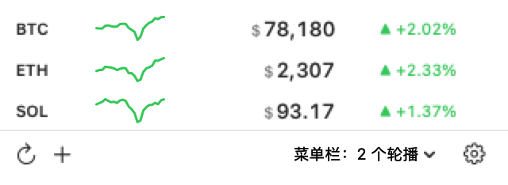
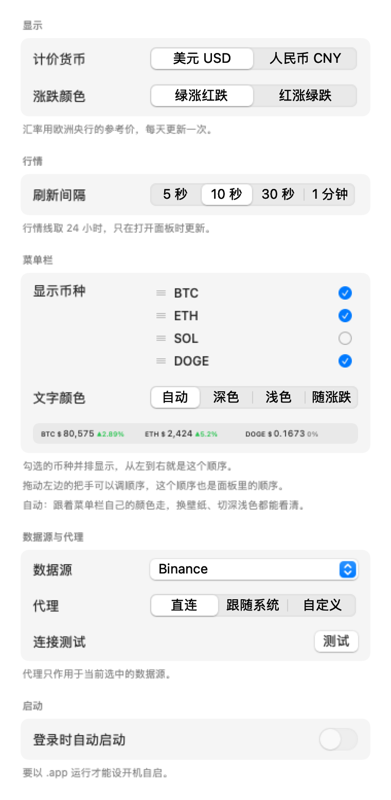

一个 macOS 菜单栏小工具。币、黄金、白银、美股的行情放在菜单栏上， 点开能看 24 小时走势和涨跌幅，越过你设的线就发一条通知。
勾上几个，就并排显示几个。


打开 PriceBar.dmg，把 PriceBar.app 拖进「应用程序」。
安装包约 2 MB，装好占 2.8 MB；就一个 app，没有第三方依赖，也没有额外的后台进程。
没有公证，首次打开若被拦，右键点「打开」一次。
自己编也行：
# 取源码 git clone https://github.com/jovix0101/pricebar.git cd pricebar # 编译、打包成 .app 与 .dmg ./build.sh # 放到应用程序目录后打开 cp -R build/PriceBar.app /Applications/ open /Applications/PriceBar.app